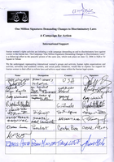

|
|

حمايت مناديان صلح و برابري از كمپين يك ميليون امضا براي تغيير قوانين تبعيض آميز
دو شنبه24 مهر 1385
چهره های شناخته شده منادی صلح و برابری،از كمپين يك ميليون امضا براي تغيير قوانين تبعيض آميز حمايت كردند.
دالای لاما ( رهبر معنوی و مذهبی تبت )، بتی ویلیامز ( برنده جایزه نوبل و بنیان گذار جنبش صلح ایرلند شمالی)، دزموند توتو ( کاردینال آفریقای جنوبی) ، اسکار آریاس ( رییس جمهور کاستا ریکا)، جودی ویلیامز (برنده جایزه نوبل- آمریکا)، خوزه راموس هرتا ( نخست وزیر تیمور شرقی)، مایرید کاریگان مگویر (برنده جایزه نوبل- ایرلند شمالی)، ریگوبرت منچاتم ( برنده جایزه صلح نوبل- گواتمالا) و آدولف پرز اسکوتیول (برنده جایزه نوبل- آرژانتین) از جمله امضا كنندگان بيانيه حمايت از كمپين هستند.
اين افراد از طريق شيرين عبادي در جريان طرح قرار گرفته و حمايت خود را از اين حركت زنان ايراني اعلام كرده اند.
شيرين عبادی، كه از حاميان اوليه كمپين است، در سفرها و سخنرانی های خود در گوشه و کنار دنیا کلیات طرح و اهداف آن را برای دوست داران صلح و برابری معرفي كرده و توانسته توجه تعدادی از شناخته شده ترین افراد در حوزه صلح و بشردوستی را به كمپين يك ميليون امضا براي تغيير قوانين تبعيض آميز جلب كند.